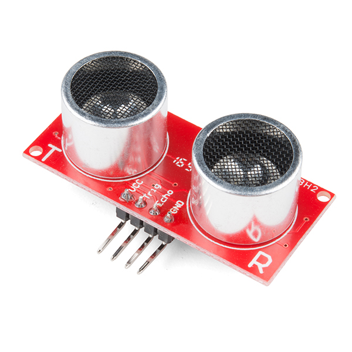
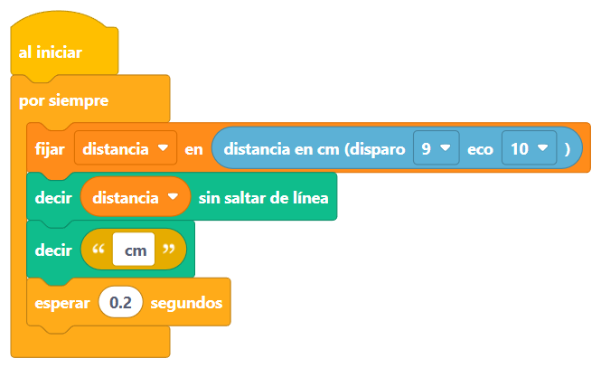

Sesión 7
El murciélago 🦇
Tu Arduino ya hace luz, sonido y movimiento.
Hoy aprende a ver con los oídos… ¡hasta en plena oscuridad!
Antes de partir
Lo que ya sabemos 🧠
🦾 Sesión 6: el servo
- El servo es un actuador: va a un ángulo exacto (0 a 180) y se queda
- «contar»: repetir contando 🔁
- La perilla es un sensor que da un número (0 a 100); «asignar … al rango …» lo traduce a un ángulo
🧰 De antes, para hoy
- Sensores que miden cuánto, no solo sí o no (sesión 6)
- «si / si no» y las variables, cajitas con un número (sesión 4)
- El monitor serie y el bloque «decir» para ver los números (sesión 4)
- El buzzer: actuador de sonido con «tocar nota» (sesión 5)
Hoy tu Arduino aprende a ver con los oídos 🦇
Un superpoder de verdad
¿Cómo ve un murciélago de noche? 🌙
Grita un sonido tan agudo que no lo escuchamos y espera el eco. Si el eco vuelve rápido, la polilla está cerca; si tarda, está lejos.
Nuestro murciélago electrónico
El sensor HC-SR04 👀

Parecen dos ojos… ¡pero son una boca y una oreja! Foto: SparkFun · CC BY 2.0
- 📣 TRIG: la boca. Por aquí sale el grito.
- 👂 ECHO: la oreja. Aquí llega el eco.
- 🔴 VCC: su comida, los 5 V.
- ⚫ GND: el suelo de siempre.
Su chillido vibra 40 000 veces por segundo: ni tú ni tu perro pueden oírlo. 🤫
La matemática del murciélago
La cuenta del eco ⏱️
la cuenta
eco tardó 1749 microsegundos
sonido: 0.034 cm por microsegundo
distancia = 1749 × 0.034 / 2 = 30 cm
¿Por qué dividir entre 2? Porque el grito hace el viaje ida y vuelta: a la pared… ¡y de regreso! ↔️
Tranquilo: no tendrás que hacer esta cuenta. En Bloquino, un bloque la hace por ti. 😉
¡Manos a la obra!
Los cuatro cables del murciélago 🔌
Van igual en todos tus proyectos
Los bloques del murciélago 🧩

Al simular, cambia la distancia en el panel del sensor. ¿Cómo mide el bloque por dentro? Proyecto: sketches/sesion-07/murcielago/murcielago.bloquino
Práctica
¡No me toques! 🚨
LED en el pin 13 (sesión 3) y buzzer en el pin 8 (sesión 5): ¡ya sabes armar los dos! Proyecto: sketches/sesion-07/alarma/alarma.bloquino.
⭐ Proyecto estrella
Sensor de retroceso para tu bici 🚲
Mientras más cerca de la pared, más seguido pita. Igual que los autos de verdad.
El truco 🪄
tocar nota la agudo por 0.06 segundos en pin 8
esperar distancia × 0.008 segundos
A 50 cm espera 0.4 segundos entre pitidos; a 10 cm, ¡solo 0.08! 🔊
Armar el circuito: murciélago + buzzer
Armar los bloques y probarlos con Iniciar simulación
Cargar a la placa y… ¡a retroceder! 🚲
⭐ Reto de la sesión
Elige tu aventura 🎯
- Nivel 1: semáforo de estacionamiento 🚦 — verde lejos, amarillo cerca, rojo ¡FRENA!
- Nivel 2: que al llegar al rojo el buzzer haga un pitido largo y seguido, como los autos
- Nivel experto: el theremin fantasma 👻 — cada 15 cm, una nota distinta: ¡música moviendo la mano en el aire!
El murciélago mide bien entre 2 cm y 4 m. Ojo: las cosas blanditas (peluches, cortinas) se tragan el eco y lo confunden. 🧸
Duelo de cerebritos
¿Cuánto aprendiste? Toca para voltear
¿Cómo sabe el murciélago dónde está la polilla?
Grita y mide cuánto tarda el eco en volver 🦇
¿Quién es TRIG y quién es ECHO?
TRIG es la boca que grita, ECHO la oreja que escucha 📣👂
¿Por qué la cuenta divide entre 2?
Porque el grito va a la pared y vuelve: dos viajes ↔️
¿Qué nos regala el bloque «distancia en cm»?
Los centímetros hasta el objeto, con la cuenta ya hecha 📏
La alarma suena si distancia < 20. ¿Y a 50 cm?
Nada: el «si» da «no» y manda el «si no»: silencio 🤫
Lo lograste
¡Tu Arduino ve en la oscuridad! 🎉
Hoy tu cerebrito aprendió el truco del murciélago…
y tu bici ya tiene sensor de retroceso, como un auto. 🚲
Próxima sesión 🌡️
El termómetro: medir el calor y el frío… ¡con el monitor serie llenito de grados y experimentos!